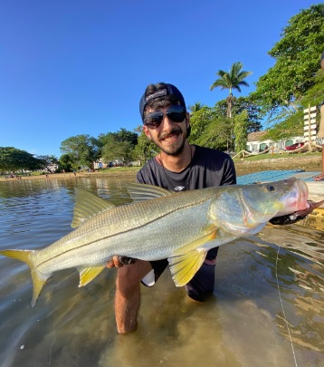

Nascido em Italalva, filho de Raphaela e Morales, fui criado até os 4 anos de idade na cidade do Rio de Janeiro, com 5 anos vim morar em Barra de São João, onde estou até hoje. Minha cidade é cercada por um rio e pelo mar, o que facilitou eu me tornar um apaixonado pela pesca esportiva e começar a competir nesta modalidade. Em 2018 conquistei meu primeiro título na pesca esportiva e hoje sou conhecido no Brasil inteiro pela pescaria de grandes Robalos. Adoro explorar a natureza e sempre que tenho um tempo livre estou na água andando de caiaque.
